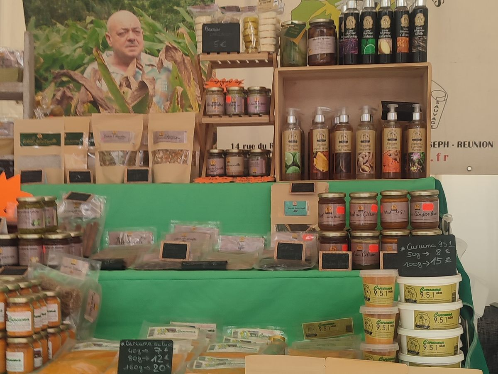
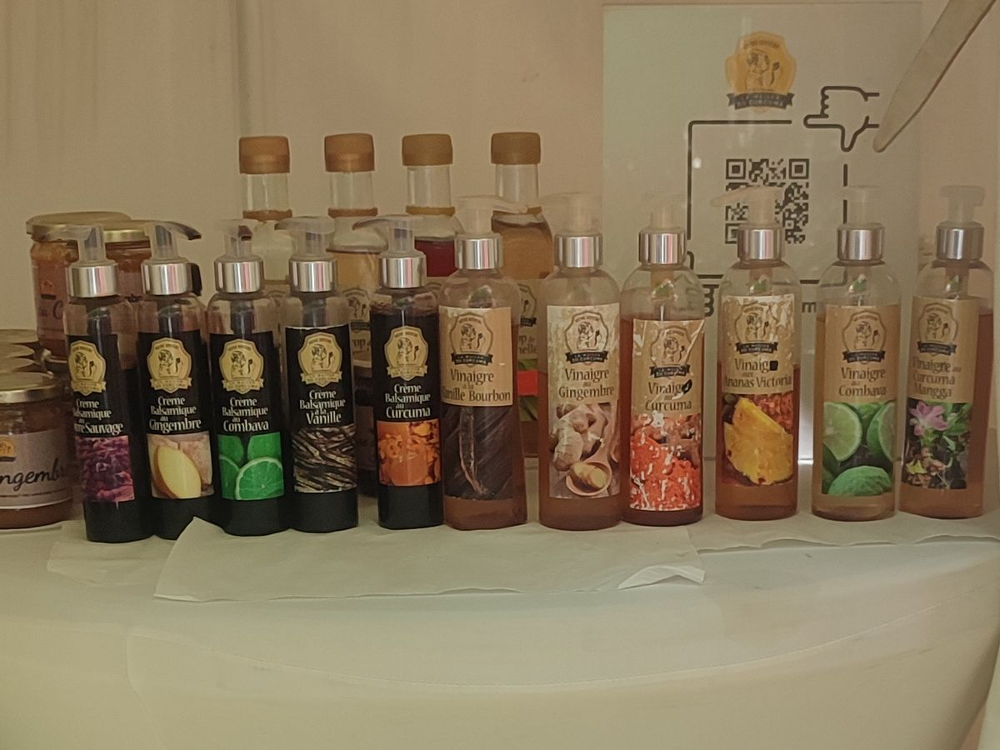
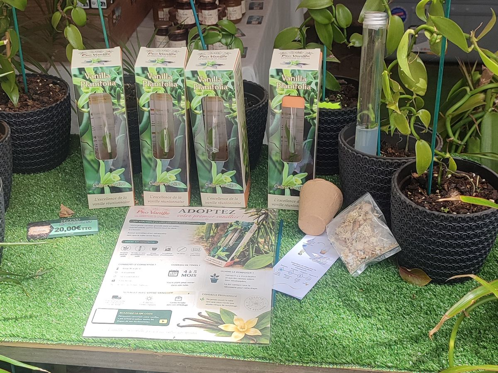
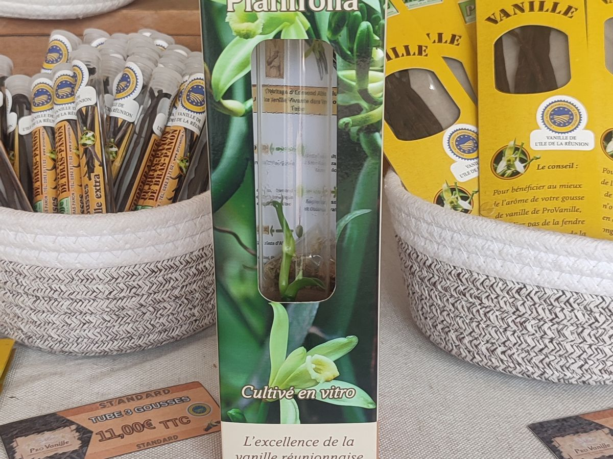

Savoirs
Recenser et faire reconnaître les gestes hérités : pollinisation de la vanille, séchage, tressage, cuisine au feu de bois, plantes qui soignent.

Savoirs & Terroirs de l'Océan Indien
Des terroirs d'exception, un avenir partagé.
Notre mission
STOI est une association née à La Réunion. Elle fait connaître les produits, les gestes et les producteurs des îles du Sud de l'océan Indien, et crée des liens durables entre ceux qui cultivent, ceux qui transforment et ceux qui achètent.
Recenser et faire reconnaître les gestes hérités : pollinisation de la vanille, séchage, tressage, cuisine au feu de bois, plantes qui soignent.
Valoriser ce que chaque sol produit de meilleur, des pentes volcaniques aux côtes, en mettant en avant l'origine et le producteur.
Faire circuler les savoir-faire entre territoires et entre générations, par des ateliers, des marchés itinérants et des rencontres.
Nos terroirs
Vanille & volcan
Sur les sols volcaniques, la vanille est encore pollinisée à la main, fleur par fleur, selon le geste mis au point à La Réunion par Edmond Albius en 1841. Puis viennent des mois d'échaudage, d'étuvage et de séchage au soleil.
Café & montagne
Dans la fraîcheur des hauteurs, le café prend son temps. Le Bourbon pointu, variété historique de La Réunion, donne une tasse douce et peu amère, cueillie à la main et torréfiée en petites quantités.
Curcuma
Appelé safran péi à La Réunion, le curcuma colore les caris et les rougails. Le rhizome est récolté, bouilli, séché puis broyé : une épice du quotidien qui porte tout un savoir-faire familial.
Épices & mer
Girofle, cannelle, poivres sauvages, ylang-ylang : les épices ont longtemps voyagé d'île en île par la mer. Nous suivons ces routes pour faire connaître les producteurs qui les cultivent aujourd'hui.
Savoir-faire & artisanat
Chaque produit a une main, un lieu, une histoire. Cette galerie accueillera les portraits des artisans et producteurs qui travaillent avec STOI.
Producteur à la une
Le curcuma planté, récolté et transformé à La Réunion.
Fondée à la Plaine des Grègues, à Saint-Joseph, par celui que tous surnommaient « Mémé Rivière », aujourd'hui disparu, la Maison du curcuma propose curcuma, épices, agrumes, tisanes et rouroute (arrow-root), sans pesticides. Sur son étal : poudre de curcuma, rouroute en poudre et en bonbons, sirops, vinaigres et crèmes balsamiques aromatisés, gelées et confitures.
Téléphone : 0262 37 54 66


Producteur à la une
À Bras-Panon, dans l'Est de La Réunion, cette coopérative de producteurs fait vivre la vanille de l'île : gousses entières en tubes et en sachets, extraits, café à la vanille, et même des plants de Vanilla planifolia à faire pousser chez soi.
Près de 80 % des producteurs de vanille de l'île travaillent avec ProVanille, dont la mission est de les accompagner dans la transformation et la vente de leur vanille.
Sa vanille porte le label IGP « Vanille de l'île de La Réunion », obtenu en 2021. Cette Indication géographique protégée, reconnue par l'Union européenne, garantit que la vanille est cultivée et préparée sur l'île selon un cahier des charges strict et contrôlé : pollinisation manuelle, échaudage, étuvage et séchage lent selon les méthodes traditionnelles. Elle protège le nom contre les imitations et assure au consommateur une origine et une qualité vérifiées.


Vous êtes artisan ou producteur dans l'océan Indien ? Présentez-nous votre travail.
Circuits courts & professionnels
Restaurants, épiceries fines, hôtels, distributeurs, comités d'entreprise : STOI vous ouvre l'accès aux producteurs de la région, avec une origine claire et un prix juste pour celui qui produit.
Vous cherchez une vanille, un café, une épice précise ? Nous identifions les producteurs qui correspondent à vos volumes, à votre qualité et à votre calendrier.
Nous organisons la rencontre, l'envoi d'échantillons et les premiers échanges entre votre structure et les producteurs, d'une île à l'autre.
Achat groupé, coffrets découverte, approvisionnement régulier : nous vous accompagnons jusqu'à la commande et suivons la relation dans la durée.
Contact
Producteur, artisan, professionnel ou simple curieux : une question, un projet, une envie de partenariat, nous vous répondons.
118 cité Kerveguen, 97430 Le Tampon, La Réunion